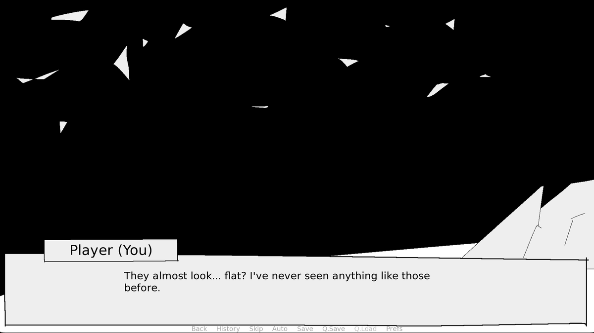

A point-and-click visual novel about the place where all abandoned games, assets and ideas go. Everything you see here is drawn by hand, in black and white, because that's what unfinished things look like to me.
when Oct 2025 – now
engine Ren'Py · art in Magma
team solo
my part writing · art · code
made for CAS project, ISB
What it is
BandiYou wake up somewhere with a black sky and white shapes drifting in it. They look flat, like they were never finished. There's a floating island, a sign that says do not enter, and a hallway of doors. Every door is a game somebody started and stopped.
BandiYou click around, talk to what's left of the characters, and slowly figure out where you are and why there's a sign with your name on it.

they almost look… flat?
What I made
BandiAll of it: the story, the backgrounds, the sprites, and the script in Ren'Py. The art rule was strict: black, white, one grey, wobbly lines, no shading. Partly because I like how it looks, partly because I wanted to actually finish it.
BandiThis site borrows its look from the game. So in a way you're walking around inside it right now.
Screens
the island — I can't see what it says from herethe sky